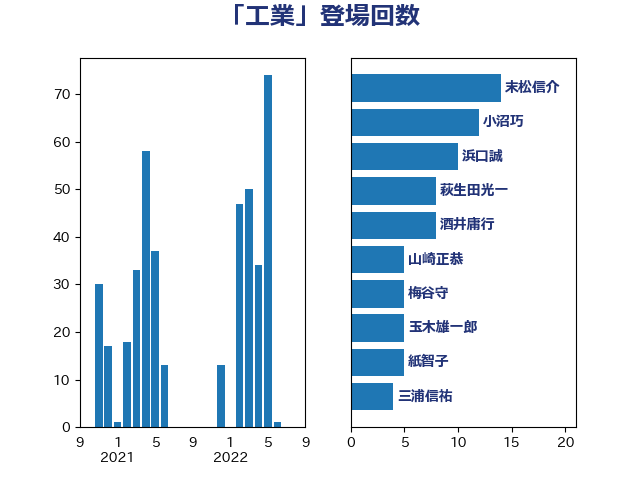

単語「工業」

| 末松信介 | 自由民主党 | 14 回 |
| 小沼巧 | 立憲民主党 | 12 回 |
| 浜口誠 | 国民民主党 | 10 回 |
| 萩生田光一 | 自由民主党 | 8 回 |
| 酒井庸行 | 自由民主党 | 8 回 |
| 山崎正恭 | 公明党 | 5 回 |
| 梅谷守 | 立憲民主党 | 5 回 |
| 玉木雄一郎 | 国民民主党 | 5 回 |
| 紙智子 | 日本共産党 | 5 回 |
| 三浦信祐 | 公明党 | 4 回 |
| 岡本三成 | 公明党 | 4 回 |
| 斉藤鉄夫 | 公明党 | 4 回 |
| 梶山弘志 | 自由民主党 | 4 回 |
| 浮島智子 | 公明党 | 4 回 |
| 田村貴昭 | 日本共産党 | 4 回 |
| 青山繁晴 | 自由民主党 | 4 回 |
| おおつき紅葉 | 立憲民主党 | 3 回 |
| 佐藤茂樹 | 公明党 | 3 回 |
| 城井崇 | 立憲民主党 | 3 回 |
| 大島敦 | 立憲民主党 | 3 回 |
| 室井邦彦 | 日本維新の会 | 3 回 |
| 山谷えり子 | 自由民主党 | 3 回 |
| 櫻井充 | 自由民主党 | 3 回 |
| 田名部匡代 | 立憲民主党 | 3 回 |
| 石垣のりこ | 立憲民主党 | 3 回 |
| 笠井亮 | 日本共産党 | 3 回 |
| 茂木敏充 | 自由民主党 | 3 回 |
| 鈴木義弘 | 国民民主党 | 3 回 |
| 中島克仁 | 立憲民主党 | 2 回 |
| 中村裕之 | 自由民主党 | 2 回 |
| 中谷真一 | 自由民主党 | 2 回 |
| 加田裕之 | 自由民主党 | 2 回 |
| 小泉進次郎 | 自由民主党 | 2 回 |
| 山田宏 | 自由民主党 | 2 回 |
| 岸信夫 | 自由民主党 | 2 回 |
| 川田龍平 | 立憲民主党 | 2 回 |
| 平山佐知子 | 無所属 | 2 回 |
| 横山信一 | 公明党 | 2 回 |
| 田中健 | 国民民主党 | 2 回 |
| 田嶋要 | 立憲民主党 | 2 回 |
| 石原正敬 | 自由民主党 | 2 回 |
| 石川大我 | 立憲民主党 | 2 回 |
| 礒崎哲史 | 国民民主党 | 2 回 |
| 福島みずほ | 社会民主党 | 2 回 |
| 竹内真二 | 公明党 | 2 回 |
| 緑川貴士 | 立憲民主党 | 2 回 |
| 西銘恒三郎 | 自由民主党 | 2 回 |
| 近藤和也 | 立憲民主党 | 2 回 |
| 野上浩太郎 | 自由民主党 | 2 回 |
| 野間健 | 立憲民主党 | 2 回 |
| 須藤元気 | 無所属 | 2 回 |
| 馬淵澄夫 | 立憲民主党 | 2 回 |
| こやり隆史 | 自由民主党 | 1 回 |
| 上野通子 | 自由民主党 | 1 回 |
| 中川正春 | 立憲民主党 | 1 回 |
| 中野洋昌 | 公明党 | 1 回 |
| 串田誠一 | 日本維新の会 | 1 回 |
| 亀岡偉民 | 自由民主党 | 1 回 |
| 井上貴博 | 自由民主党 | 1 回 |
| 伴野豊 | 立憲民主党 | 1 回 |
| 住吉寛紀 | 日本維新の会 | 1 回 |
| 佐藤正久 | 自由民主党 | 1 回 |
| 前原誠司 | 国民民主党 | 1 回 |
| 古屋範子 | 公明党 | 1 回 |
| 古川禎久 | 自由民主党 | 1 回 |
| 古賀之士 | 立憲民主党 | 1 回 |
| 吉良州司 | 無所属 | 1 回 |
| 国定勇人 | 自由民主党 | 1 回 |
| 國場幸之助 | 自由民主党 | 1 回 |
| 國重徹 | 公明党 | 1 回 |
| 坂本哲志 | 自由民主党 | 1 回 |
| 大野泰正 | 自由民主党 | 1 回 |
| 宮口治子 | 立憲民主党 | 1 回 |
| 宮本徹 | 日本共産党 | 1 回 |
| 小池晃 | 日本共産党 | 1 回 |
| 小西洋之 | 立憲民主党 | 1 回 |
| 小野泰輔 | 日本維新の会 | 1 回 |
| 山下貴司 | 自由民主党 | 1 回 |
| 山口壯 | 自由民主党 | 1 回 |
| 山岡達丸 | 立憲民主党 | 1 回 |
| 山崎誠 | 立憲民主党 | 1 回 |
| 山添拓 | 日本共産党 | 1 回 |
| 山際大志郎 | 自由民主党 | 1 回 |
| 岩渕友 | 日本共産党 | 1 回 |
| 岸田文雄 | 自由民主党 | 1 回 |
| 岸真紀子 | 立憲民主党 | 1 回 |
| 川崎ひでと | 自由民主党 | 1 回 |
| 工藤彰三 | 自由民主党 | 1 回 |
| 平沢勝栄 | 自由民主党 | 1 回 |
| 後藤茂之 | 自由民主党 | 1 回 |
| 徳永エリ | 立憲民主党 | 1 回 |
| 新妻秀規 | 公明党 | 1 回 |
| 有村治子 | 自由民主党 | 1 回 |
| 朝日健太郎 | 自由民主党 | 1 回 |
| 杉久武 | 公明党 | 1 回 |
| 柳ヶ瀬裕文 | 日本維新の会 | 1 回 |
| 梅村聡 | 日本維新の会 | 1 回 |
| 横沢高徳 | 立憲民主党 | 1 回 |
| 池下卓 | 日本維新の会 | 1 回 |
| 池畑浩太朗 | 日本維新の会 | 1 回 |
| 沢田良 | 日本維新の会 | 1 回 |
| 河野義博 | 公明党 | 1 回 |
| 浅田均 | 日本維新の会 | 1 回 |
| 浜田聡 | NHK党 | 1 回 |
| 清水貴之 | 日本維新の会 | 1 回 |
| 渡辺猛之 | 自由民主党 | 1 回 |
| 源馬謙太郎 | 立憲民主党 | 1 回 |
| 漆間譲司 | 日本維新の会 | 1 回 |
| 猪口邦子 | 自由民主党 | 1 回 |
| 田村まみ | 国民民主党 | 1 回 |
| 田村憲久 | 自由民主党 | 1 回 |
| 田村智子 | 日本共産党 | 1 回 |
| 白石洋一 | 立憲民主党 | 1 回 |
| 石井正弘 | 自由民主党 | 1 回 |
| 石井苗子 | 日本維新の会 | 1 回 |
| 石川香織 | 立憲民主党 | 1 回 |
| 福島伸享 | 無所属 | 1 回 |
| 福田達夫 | 自由民主党 | 1 回 |
| 秋野公造 | 公明党 | 1 回 |
| 穀田恵二 | 日本共産党 | 1 回 |
| 空本誠喜 | 日本維新の会 | 1 回 |
| 笹川博義 | 自由民主党 | 1 回 |
| 細田健一 | 自由民主党 | 1 回 |
| 羽田次郎 | 立憲民主党 | 1 回 |
| 芳賀道也 | 国民民主党 | 1 回 |
| 荒井優 | 立憲民主党 | 1 回 |
| 西岡秀子 | 国民民主党 | 1 回 |
| 赤羽一嘉 | 公明党 | 1 回 |
| 足立敏之 | 自由民主党 | 1 回 |
| 金城泰邦 | 公明党 | 1 回 |
| 鈴木宗男 | 日本維新の会 | 1 回 |
| 鈴木庸介 | 立憲民主党 | 1 回 |
| 鈴木敦 | 国民民主党 | 1 回 |
| 鈴木英敬 | 自由民主党 | 1 回 |
| 長妻昭 | 立憲民主党 | 1 回 |
| 長峯誠 | 自由民主党 | 1 回 |
| 阿部司 | 日本維新の会 | 1 回 |
| 青木愛 | 立憲民主党 | 1 回 |
| 麻生太郎 | 自由民主党 | 1 回 |